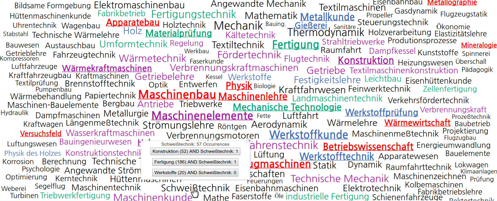
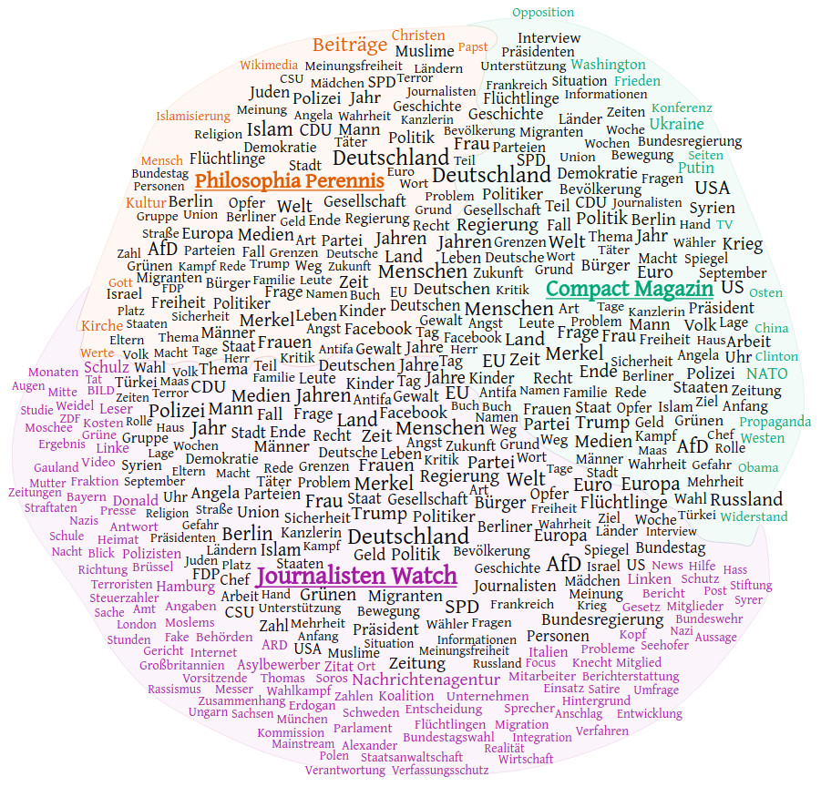

The increasing value of information visualization techniques to support investigating quantitative research questions in humanities applications is well-documented (Jänicke et al., 2017; Windhager et al., 2019). At the same time, it is important to make (digital) humanities scholars literate in dealing with visualizations to ensure that accurate conclusions can be drawn. In order to make younger generations ready for interdisciplinary work in a digital humanities context, I taught a module that attracted both computer science and humanities students. This article reflects on the most important aspects in teaching the course throughout three years.
Cohort of students
Teaching needs to be flexibly organized in dependency on the backgrounds of students joining a course. A course might be offered exclusively for either humanities or computer science students, or it can attract students with diverse study subjects. I faced different constellations, and emphasized different aspects according to the demands of the cohort. Whereas humanities students profit from more intense discussions on computational thinking and data modeling, it is especially helpful for computer science students to get to know typical research interests and traditional workflows of humanities scholars. The major focus should be to ensure that students, independent of their backgrounds, learn to “speak the same language” using the same terminology.
Teaching visualization theory
To serve students with an easy-to-digest overview of visualization design, I recommend Tamara Munzner’s book “Visualization Analysis and Design” (Munzner, 2014). It provides an introduction to data and task abstraction that are necessary to comprehend and to develop new or adapt existing visualizations. It further discusses how data features can be appropriately mapped to visual features, and how users can interact with visualizations. Also, emphasis should be devoted to Shneiderman’s Information Seeking Mantra “Overview first, zoom and filter, then details-on-demand” (Shneiderman, 1996) as it encapsulates the general idea of quantitative data analysis without losing the materials a visualization is composed of. This rather theoretical frame should be accomplished with discussing visualization techniques that are of particular importance for digital humanities research: geographical maps, timelines, tag clouds, heat maps and graphs.
Ready-to-use-based vs. development-driven visualizations
Next to theoretical contents, the course should have a strong focus on practical work. It is known that different approaches to make use of visualization for knowledge discovery in digital humanities applications exist (Jänicke, 2016). The first approach is to apply ready-to-use tools like Voyant (Sinclair and Rockwell, 2020) for quantitative visual text analysis or Gephi (Bastian et al., 2009) for graph visualization. While the advantage of using such frameworks is generating arguable visual output in a short amount of time, research interests might deviate from what the tool can provide. Further, scholars need to learn how to use potentially complex tools and how to interpret upcoming results. In contrast to applying existing tools to generate visualizations, (digital) humanities and visualization scholars might also engage with each other aiming to generate a new visual vocabulary to expedite knowledge discovery, thereby facing the problems of interdisciplinary collaborations. While the first approach should be carried out simultaneously to the theoretical sessions, I recommend to conduct interdisciplinary student projects in the second part of the course.
Supervisory roles during project work
Training to apply the learned visualization-related terminology should be the main focus of a project, while the visualization result itself plays a secondary role. Especially in a setting with mixed backgrounds, students should be engaged to think about potentially interesting project ideas. Each conducted project should include at least one participant with a (digital) humanities and one with a computer science background to expedite interdisciplinary exchange. This constraint generates different supervisory roles:
The Mediator: Projects involve students having a computer science and a humanities background alike. The entire project is managed by the students, whereas the teacher might supervise in the form of a mediator during meetings. While students face typical pitfalls of interdisciplinary projects, such projects still brought forth considerable results, one of which is shown in Figure 1.
The Real & the Fake Humanities Scholar: When the number of students with a humanities background is too low, project groups that only include computer science students need to be complemented with domain experts. For some of the projects, I was able to involve partners from the humanities, the real humanities scholars, with research interests targeted towards available data sets. This setting generated very good results (see Figure 2) and guaranteed the steepest learning curve for computer science students as they cooperated with domain experts experienced in digital humanities. However, for some projects I, educated in computer science, needed to act as a humanities scholar, being the least favorable setting as only fake interdisciplinary discussions are possible.
The Helper: On the other hand, the number of computer science students joining a course might be limited. In that case, I could advise students in the role of a computer scientist, better suitable considering my own background. The focus in such projects was rather on data modeling and acquisition as well as applying existing tools and libraries than developing new solutions. An example is shown in Figure 3.
Figure 1: The mediator project developed a method to semi-automatically extract biographical information about members of the German Bundestag in 2019, and the adapted stream visualization allows multifaceted exploration of biographical features.
Figure 2: The real humanities scholar project focused on the development of an interactive tag cloud that supports composing engineering branches based on the study subjects of engineering professors. More information can be found in a related publication on the project (Meinecke and Jänicke, 2018).
Figure 3: The helper project focused on the contents published at three German websites known for publishing fake news articles. For comparatively analyzing the results, the TagPies visualization (Jänicke et al., 2018) was adapted.
I recommend making such courses accessible to all students as it prepares them best for potential future collaborations in a digital humanities context. More detailed information on theoretical contents, conducted student projects and course reflections can be found in my related IVAPP article (Jänicke, 2020).
References
Bastian, M., Heymann, S., Jacomy, M., et al. (2009). Gephi: an open source software for exploring and manipulating networks. ICWSM, 8:361–362.
Jänicke, S. (2016). Valuable Research for Visualization and Digital Humanities: A Balancing Act. Workshop on Visualization for the Digital Humanities, IEEE VIS 2016, Baltimore, Maryland, USA.
Jänicke, S., Franzini, G., Cheema, M. F., & Scheuermann, G. (2017). Visual Text Analysis in Digital Humanities. In Computer Graphics Forum (Vol. 36, No. 6, pp. 226-250).
Jänicke, S., Blumenstein, J., Rücker, M., Zeckzer, D., & Scheuermann, G. (2018). TagPies: Comparative Visualization of Textual Data. In VISIGRAPP (3: IVAPP) (pp. 40-51).
Jänicke, S. (2020). Teaching on the Intersection of Visualization and Digital Humanities. In: 15th International Joint Conference on Computer Vision, Imaging and Computer Graphics Theory and Applications (pp. 100-109). SCITEPRESS Digital Library.
Meinecke, C., & Jänicke, S. (2018). Visual Analysis of Engineers’ Biographies and Engineering Branches. Leipzig Symposium on Visualization in Applications 2018 (LEVIA’18).
Munzner, T. (2014). Visualization Analysis and Design. A K Peters Visualization Series, CRC Press.
Shneiderman, B. (1996). The Eyes Have It: A Task by Data Type Taxonomy for Information Visualizations. In Visual Languages, Proceedings, pages 336–343.
Sinclair, S., & Rockwell, G. (2020). Voyant-Tools. https://voyant-tools.org/
Windhager, F., Federico, P., Schreder, G., Glinka, K., Dörk, M., Miksch, S., & Mayr, E. (2018). Visualization of Cultural Heritage Collection Data: State of the Art and Future Challenges. IEEE Transactions on Visualization and Computer Graphics, 25(6), 2311-2330.